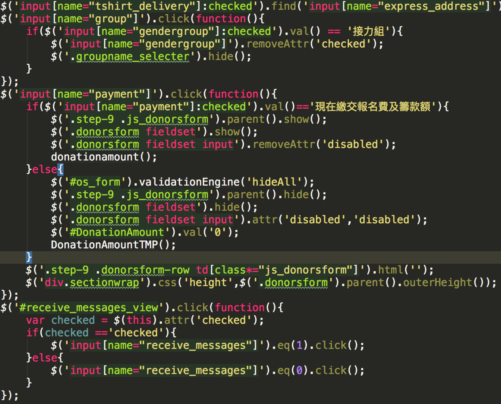

你真能写好代码？
写这么一段文字，纯属有感而发。
1、代码是给谁看的
老生常谈了，代码到底是给谁看的，是给机器看的，还是给人看的？问100个程序员，100个都说是给人看的，不信你可以试试。
要我说，代码即是给人看的，也是给机器看的。首先，最低要求是机器看的懂，保证代码可用，bug少，这是基础。其次，代码才是给人看的，除非代码写好以后永远不改动，不然一定会有人看，怎么让自己或者别人看的懂，看的爽，这是一个难题。
2、什么是好代码
简单来说，人类能简单看的明白的代码，就是好代码。
好的代码首先要赏心悦目，至少看着不会让人想吐，大家可以体会下，什么是烂代码：

吐了没有？这样的代码无论里面逻辑多么棒，算法多么精彩，都只会令人失去往下读的欲望。
所以，写代码和写文章一样，有几个境界：
1、文字要通，格式要规范，这是基本要求，试想一篇文法狗屁不通，断句错漏百出的文章，无论内容多么精彩，都不会有人看的。
2、结构要好，思路要清楚， 好代码，可以让人一目十行的读，也可以沉浸到某部分进行仔细推敲。
3、单个文件的架构要清楚，保持单个文件和工程的编码风格统一，减少读者的理解成本，最好，让读者自然而然的明白这个文件的脉络和思路。
4、整体架构清晰统一，就像一部书，有明确的信息架构，每个项目都会有自己的个性和特点，清晰独立的结构，能够更让人理解全局，从而更好的理解作者的思路。
总之，写好代码，需要有一定程度“洁癖”，只有保持对代码干净的追求，才能写出好的代码。
3、为什么要努力写出好代码
有非常多的理由让我们写出好代码，从负责任的角度来说，至少有以下两个重点：
1、对公司和别人负责
a）良好的结构和清晰规范的代码，使代码容易维护，降低了项目的维护成本，增长了项目周期，从而降低了公司的运营成本
b）根据破窗理论（一栋楼如果有一扇玻璃破了，其他的玻璃也会很快被打破），好的代码不一定会越来越好，烂代码一定越来越烂，不好的代码会加速“腐烂”
c）减少读代码的工作量，间接的帮助了别人，当一个人因为你的代码少加班的时候，他内心一定是感谢你的
2、对自己负责
a）好的代码，方便自己重新阅读和修改。如果长期维护一个项目，你一定会感激三个月前的自己留下的优雅代码
b）建立良好的个人品牌，当提到你代码的时候，大家都会交口称赞，也不失为一件比较爽的事情
4、程序员的修养和自律
作为一个追求卓越的程序员，除了实现日常工作外，需要不断的学习，思考如何把代码和架构做的更好，思考代码背后的意义和逻辑，提高自己的“代码修养”。才能不断写出优雅的好代码。
程序员都是懒人，不懒的程序员不是好程序员。归根结底，创造程序的动力是帮助人们更好的生活，提升效率，更加“懒”。在写代码的时候，我们也常常会犯懒病，总是说着：“先这样，后面再优化”这样美好的谎言。当然会有很多交付的压力和其他各种借口，让我们“先这样”。这时，就需要靠程序员的自律来约束自己写出良好的代码了。
总而言之，写出好代码的路上会有各种阻碍，跟随自己的内心，不断保持对好代码的敬畏和追求，不断提升自己的修养和自律能力，才能写出好代码，加油！
本文原载于公众号，敬请扫码关注：